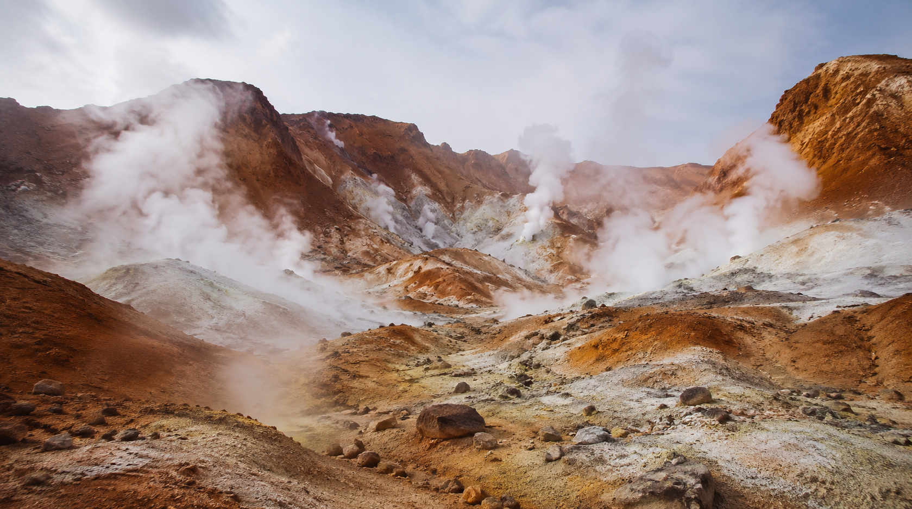
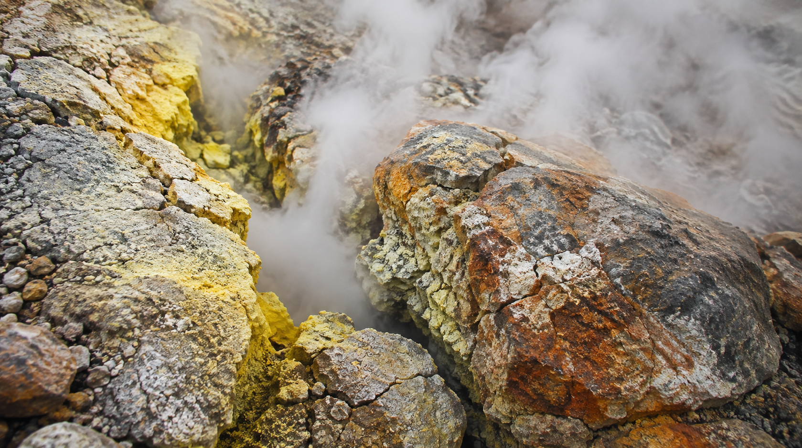
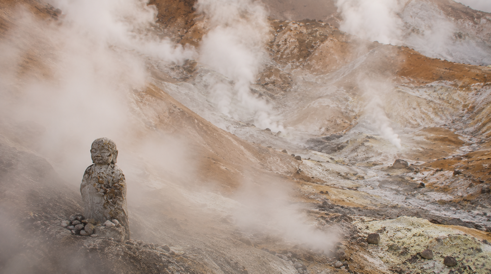

Welcome to Hell Valley: Why Ancient Japan Feared Owakudani
The Earth Still Breathing
by Kiri
…Oh. You came back.
My sister's off chasing something again — a moth, a shadow, who knows. So today it's just the two of us, and a new poster that arrived this morning. Come a little closer. I was just sitting with it myself.
This one is called "Welcome to Hell Valley: Why Ancient Japan Feared Owakudani."
Do you remember the poster I showed you last time — the still blue lake sleeping beneath Ryusendo Cave? If that place was a water god's quiet home, then this one is its exact opposite. Where that was silence, this is breath. Where that was reverence from a careful distance, this was, for a very long time, simple dread.
A Name Erased From the Land of Hell
Owakudani draws crowds now — cable cars, black eggs boiled in its hot springs, tourists with cameras. But before it wore that name, before the Meiji era smoothed it over into something more presentable, people called this place Ojigoku — the Great Hell.
I don't think that was an exaggeration, or at least not entirely. Nothing grows on that scorched, reddish-brown earth. Steam claws its way up through cracked rock without pause, day and night, the same way it has for centuries. There's a violence to it that Ryusendo never had — no stillness to retreat into, no dark water to keep its secrets quiet.

Where the earth still breathes.
Steam, Sulfur, and the Edge of the Underworld
Try to imagine it without the knowledge we take for granted now — no geology, no science to explain a mountain that exhales. Just the smell of sulfur thick enough to catch in your throat, and a white haze that swallows the horizon whole.
It isn't hard to understand why the people who lived near this mountain, centuries ago, decided they had found the gate to the land of the dead. What else could account for earth that hissed and burned and refused to be still? Fear, in that light, isn't superstition. It's simply an honest reaction to something genuinely beyond explanation.

The mountain speaks through stone and steam.
A Small Prayer at the Gate of Hell
And yet — fear was never the whole story here either.
Look carefully at the corner of this poster, past the drifting steam, and you'll find a quiet shape half-lost in the haze: a small figure of Jizo Bosatsu, the guardian who watches over the souls of the dead. People feared this ground enough to name it hell. But it was precisely because they feared it that they placed something here to pray with — a small, stubborn act of faith set against something vast and indifferent.
That contrast is what I keep returning to. An absolute, uncaring natural threat, and beside it, the modest, persistent hope of the people who lived in its shadow. Both are held in this single frame, without either one canceling the other out.

A small prayer in a place called hell.
"Perhaps every age needs one place terrifying enough to remind its people that the earth was never something to be tamed — only lived beside, carefully."
…This isn't a poster for every wall, I'll admit that much. It carries a shadow that not everyone wants to live with. But for the kind of person who understands why a place can be feared and revered in the same breath — I think it settles in rather well.
My sister would no doubt already be halfway through telling you about the cable car ride over the crater, tail swishing the whole time. I'll leave that part to her. For now, I'm going back to my spot by the window. Take your time with the details — there's no need to rush a poster like this one.